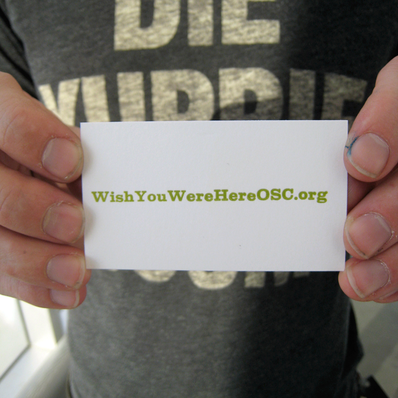

Break is over, and we have each created something new from (or based on) the workshop materials and experience. We are in the process of getting everything sorted, prepped and ready for a letterpress run. Until then, view the postcard designs to your heart's content.